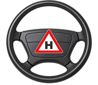
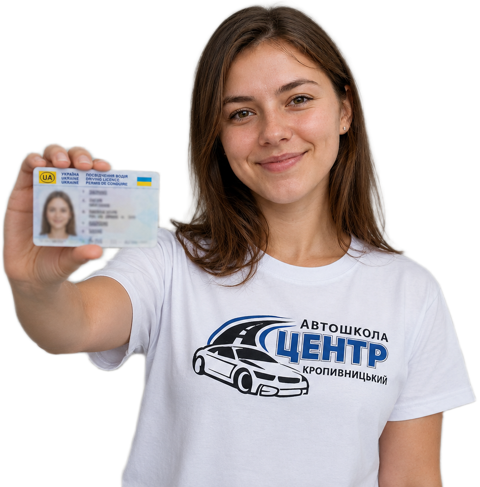
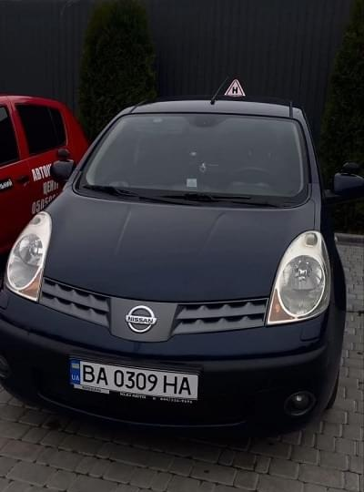
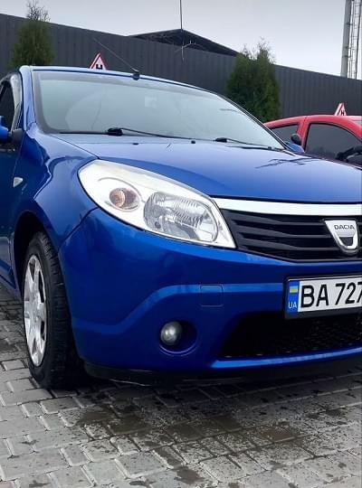
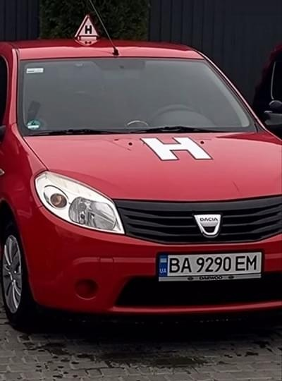
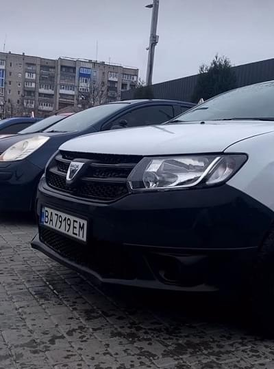

Це твоя автошкола у Кропивницькому — курси водіння та підготовка до іспиту
Отримати посвідчення водія категорії B простіше, ніж здається.
Практика на маршрутах ТСЦ Кропивницького, сучасні авто та повний супровід.
- Досвід роботи
понад 15 років - Кваліфіковані
інструктори - Сучасні авто
Повний курс (теорія + практика)
До 04.09.2026


Ціни на навчання в автошколі «Центр» у Кропивницькому
Від нуля до впевненого водіння в Кропивницькому — оберіть потрібну програму
Практичний курс
Ціна 8 000 грн*(без палива) Тривалість 6 тижнів Старт Набір триває до 04.09.2026 Категорія B *у ціну не входить паливо
МКПП350 грн/заняттяАКПП500 грн/заняттяПовний курс (Теорія + Практика)
Ціна 14 000 грн13 000 грнТривалість 9 тижнів Старт Набір триває до 04.09.2026 Категорія B ONLINEіндивідуальний графікOFFLINEПн-Пт 17:00-19:00Теоретичний курс
Ціна 5 000 грн Тривалість 3 тижні Старт Набір триває до 04.09.2026 Категорія B ONLINEіндивідуальний графікOFFLINEПн-Пт 17:00-19:00
Автошкола «Центр» у Кропивницькому — 15 років досвіду та тисячі впевнених водіїв
Акредитований заклад із власною методикою підготовки до іспитів у ТСЦ МВС
З 2011 року автошкола «Центр» проводить комплексну підготовку водіїв категорії B у Кропивницькому. Наша мета — не просто підготувати вас до складання іспиту в ТСЦ з першої спроби, а навчити безпечному та впевненому водінню у реальному міському трафіку.
- 15 років офіційної акредитації та досвіду
- 5 000+ випускників вже отримали посвідчення водія
- «Народний бренд 2023» — 2 місце у номінації «Автошкола» за вибором містян
Наші випускники отримують не просто права, а реальні навички:
- Паркування без страху: відпрацювання паралельного паркування та заїзду в гараж у реальних міських умовах.
- Читання дороги: розуміння логіки складних розв'язок та перехресть Кропивницького.
- Контраварійна база: відпрацювання реакцій та безпечних маневрів на сучасному автосимуляторі.
Чому обирають автошколу «Центр» у Кропивницькому
Сучасні технології навчання, власний автопарк та підготовка до складання іспиту без зайвого стресу
1. Сучасна практична підготовка
Даємо можливість відпрацювати навички в безпечних умовах та на реальних дорогах.
2. Досвідчені інструктори та підтримка
Наші викладачі та інструктори допоможуть подолати страх і навчать впевненому водінню.
3. Повний супровід до результату
Супроводжуємо вас від першого звернення до успішного складання іспиту в ТСЦ.
Автотренажер-симулятор водіння у Кропивницькому
Почніть навчання без страху та стресу. Автошкола «Центр» — єдина в місті, де ви можете відпрацювати перші навички керування на сучасному автотренажері на базі DAEWOO.
Головна перевага тренажера — повна безпека та швидка адаптація. Ви навчитеся відчувати габарити автомобіля, працювати з педалями та перемикати передачі ще до першого виїзду у реальний міський трафік.
💡 Умови використання:
Для учнів нашої автошколи заняття на тренажері — абсолютно безкоштовно. Для всіх інших: перше пробне заняття — безкоштовно, наступні — 300 грн/год.
Перші навички — ще до виїзду на дорогу:
- Безпечно освоїте базове керування
- Звикнете до габаритів та органів управління
- Відпрацюєте аварійні та складні дорожні ситуації
- Подолаєте страх перед першим виїздом у місто
Окуляри-симулятори Drunk Busters у Кропивницькому
Єдина автошкола в місті, де ви можете безпечно відчути, як алкоголь впливає на реакцію та координацію водія.
Ці окуляри — не просто тренажер, а потужний інструмент профілактики. Зовні вони нагадують гірськолижну маску, але після надягання повністю імітують стан сп'яніння (0,2–0,4 проміле): зір затуманюється, реакція сповільнюється, а координація порушується.
Чому цей досвід рятує життя:
- Наочна демонстрація: реалістичне відчуття втрати контролю над авто
- Абсолютна безпека: тренінг проходить у класі без ризику для життя
- Формування звички: стійке психологічне табу на керування напідпитку
Ми в автошколі «Центр» віримо в «ефект метелика». Цей практичний досвід закарбується в пам'яті назавжди. Якщо в майбутньому виникне спокуса сісти за кермо після келиха, ви згадаєте це відчуття безпорадності — і просто викличете таксі.
Власний автопарк — навчайтесь на сучасних та безпечних авто
Обирайте автомобіль із механічною (МКПП) або автоматичною (АКПП) коробкою передач. Усі наші авто регулярно проходять технічний огляд, обладнані додатковими педалями для інструктора та повністю відповідають вимогам ТСЦ МВС України.

| Марка | : Nissan Note |
| Коробка | : Автомат |

| Марка | : Dacia Sandero |
| Коробка | : Механічна |

| Марка | : Dacia Sandero |
| Коробка | : Механічна |

| Марка | : Dacia Sandero |
| Коробка | : Механічна |
Покроковий процес навчання в автошколі «Центр»
Прозора програма підготовки у Кропивницькому: від подачі документів до успішного отримання посвідчення
Історії успіху наших учнів у Кропивницькому
Чесні відгуки про роботу наших інструкторів, автопарк та підготовку до іспитів
Щиро дякую автошколі «Центр» за якісне навчання, підтримку директора та професійний підхід! Особлива подяка Лозовому Олександру Леонідовичу за чудове викладання теоретичного курсу — матеріал подавався доступно, цікаво та зрозуміло. Його слова та життєві приклади закарбовуються в пам’яті, роблячи матеріал не лише зрозумілим, а й по-справжньому цінним. Завдяки Вам, Олександре Леонідовичу, навчання було ефективним і приємним! 🚗📘 Теорію, до речі, здала я з першого разу - 20/20). Цей досвід в своєму житті не забуду ніколи і так шкода, що навчання підходить до кінця.
Хочу висловити найщиріші слова вдячності Автошколі «Центр» за ґрунтовні знання теорії і я особисто вдячна інструктору з водіння Дмитру Сергійовичу! Він допоміг мені переребороти страх, навчив усім необхідним навичкам водіння! Щиро рекомендую школу і Дмитра Сергійовича як інструктора.
Олександр Леонідович - топовий викладач! Лекції докладні, матеріал легко засвоюється, атмосфера приємна, на всі питання дає розгорнуту відповідь, шкода що навчання добігає кінця, а так би ходила ще👍🏻🤓 Теорія здана з першого разу!💯…
Дякую автошколі Центр, а особливо інструктору Лозовому Олександру Леонідовичу за навчання, доступно пояснює, цікаво слухати лекції. На водінні допомагає, пояснює. Дуже рада, що прийшла вчитися саме сюди!
Отличная автошкола, которая действительно даёт базу и основу вождения. Преподавателю Александру Леонидовичу респект!
Самая лучшая автошкола. Спасибо преподавателям за знания. Отдельно спасибо Игорю Леонидовичу, все объясняет доступно и понятно, благодаря ему я смогла научиться ездить и не бояться дороги. График занятий подстраивал под меня, что очень важно. Давал дельные и очень нужные советы. Буду всем знакомым рекомендовать эту школу. Спасибо Вам!
Пройшла навчання в групі з 4 вересня 2023 року. Наш викладач теорії ПДР Сергій Валерійович цікаво, захопливо, професійно, зрозуміло для учнів викладає теорію ПДР, відповідає на всі питання до підготовки з іспиту. Вчитися в нього одне задоволення! Рекомендую автошколу "Центр" від щирого серця. Практику водіння вдало проходила разом з інструктором Олександром Леонідовичем на легковому авто Дача з механікою. Відчуваю себе після закінчення практики водіння впевненим водієм завдяки увазі, терпінню, навчанню практики водіння з цим викладачем. Олександр Леонідович коректно вказував на мої помилки і хвалив наприкінці заняття за успіхи. Єдиний недолік - автомобіль без гідропідсилювача керма, що було для мене суттєвою перешкодою в навчанні.
Сміливо рекомендую. Вони навчать усьому, та навіть трохи більше. Теоретична частина викладається справжнім професіоналом, відчувається великий досвід. Окреме дякую за практичну підготовк, витримка інструктора дуже цінна! Приємно також було мати вибір між АКП та МКП.
Відповідаємо на все, що вас цікавить перед стартом
Зібрали чіткі відповіді на головні питання щодо курсів водіння в Кропивницькому
Скільки триває курс підготовки водія категорії B?
Повний курс триває 9 тижнів: 3 тижні відведено на вивчення теорії та 6 тижнів — на практичне водіння. Графік занять складається так, щоб вам було зручно поєднувати їх з роботою чи навчанням.
Яка вартість навчання та чи можна оплатити частинами?
Вартість акційного повного курсу (теорія + практика) становить 11 000 грн. Так, у нас діє зручна оплата частинами: ви можете зробити мінімальний перший внесок для зарахування в групу, а решту суми сплачувати поетапно впродовж усього курсу.
На яких автомобілях проходить навчання (механіка чи автомат)?
Наш автопарк складається з сучасних автомобілів Dacia Sandero та Nissan Note. Ви самі обираєте, на чому вчитися: на механічній (МКПП) або автоматичній (АКПП) коробці передач. На іспиті в ТСЦ ви будете здавати водіння на тому ж авто, до якого звикли.
Чи проходить практика по офіційних маршрутах ТСЦ у Кропивницькому?
Так, обов'язково. Останні 5 практичних занять ми проводимо разом з екзаменатором безпосередньо по затверджених маршрутах Сервісного центру МВС. Ви вивчите всі складні перехрестя та розв'язки, що гарантує впевненість на реальному іспиті.
З якого віку можна розпочати навчання в автошколі?
Розпочати навчання на категорію «В» (легкові авто) можна раніше, але складати практичний іспит у сервісному центрі МВС та отримати посвідчення ви зможете лише після досягнення 18 років. Для категорії «А» (мотоцикли) цей вік становить 16 років.
Які документи потрібні, щоб записатися до групи?
Для реєстрації вам знадобиться базовий пакет: паспорт (або ID-картка з витягом про прописку), ідентифікаційний код та медична довідка (форма 083/о). Якщо у вас є питання щодо медогляду, ми підкажемо, як пройти його швидко та без черг.
Завітайте до нашої автошколи у Кропивницькому
Обирайте зручну локацію для занять або зв'яжіться з нами для швидкої консультації.
- Адреса навчального класу:м. Кропивницький, вул. Куроп'ятникова, 29
- Графік роботи офісу:Пн-Пт: 09:00 - 18:00 | Сб: 10:00 - 15:00
- Телефони: